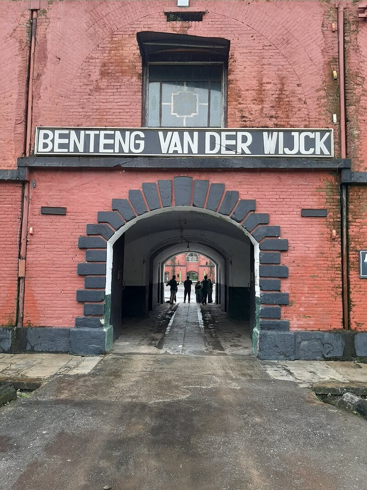
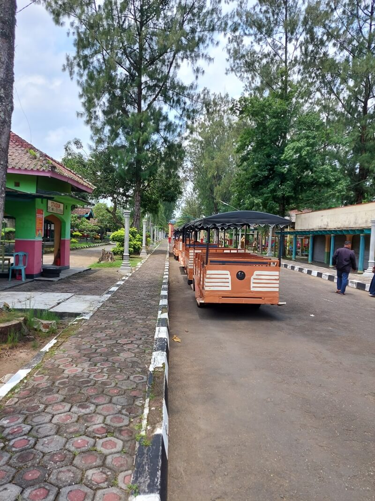

Benteng Van Der Wijck pilihan wisata sejarah di Kebumen yang wajib untuk kamu kunjungi, sebuah bangunan yang masih berdiri kokoh meski usianya sudah ratusan tahun.
Arsitektur bangunan dari Benteng Van Der Wijck kental akan gaya Eropa, dengan memiliki bentuk segi delapan yang konon katanya hanya satu-satunya di Indonesia.
Wisata sejarah di Benteng Van Der Wijck menjadi salah satu rujukan kunjungan bagi anak-anak muda, untuk mengetahui kisah sejarah di masa lalu. Misteri Benteng Van Der Wijck memang tak pernah bisa dilepaskan, secara menyimpan kisah pilu di masa lalu.
Lokasi Benteng Van der Wijck berada di Sidayutengah, Sidayu, Kecamatan Gombong, Kabupaten Kebumen, Jawa Tengah. Dari pusat kota Kebumen, jaraknya sekitar 20 km atau sekitar 40 menit. Kamu bisa melintasi Jalan Raya Sokka menuju Jalan Nasional III, kemudian masuk ke Jalan Yos Sudarso, Jalan Kartini, dan Jalan Gereja. Di persimpangan akan terlihat petunjuk arah wisata benteng. Ada tempat parkir luas di sana. Kamu harus berjalan beberapa meter untuk sampai ke benteng. Itulah tadi informasi mengenai Benteng Van der Wijck yang berada di Gombong, Kebumen, mulai dari sejarah, daya tarik, harga tiket, hingga rutenya. Tertarik berkunjung?
Harga tiket masuk di sini adalah Rp 25 ribu per orang. Tiket ini sudah termasuk wisata sejarah benteng, naik kereta, dan masuk kolam renang. Biaya parkirnya Rp 3 ribu per motor dan Rp 5 ribu per mobil. Jam buka Benteng Van der Wijck adalah mulai pukul 08.00 WIB sampai dengan pukul 17.00 WIB setiap hari

Benteng Van der Wijck memiliki bangunan dengan desain arsitektur khas Belanda. Dikutip dari laman Kemenparekraf, benteng ini memiliki luas 7.168 meter persegi dan terdiri dari 2 lantai. Tinggi bangunan ini mencapai 10 meter dengan ketebalan dinding 1,4 meter.
Bangunan berwarna merah bata ini berbentuk segi delapan mirip dengan Masjidil Haram. Ada puluhan ruangan di dalam bangunan, antara lain 16 ruangan besar dan 50-an ruangan dengan berbagai ukuran.
Karena keunikannya, Benteng Van der Wijck pernah digunakan sebagai lokasi syuting film The Raid 2: Berandal dan video klip Slank.
Daya tarik kedua yakni adanya kereta mini yang bisa ditumpangi oleh wisatawan. Uniknya kereta ini berada di atas benteng, jadi kamu bisa menikmati pemandangan dari atas. Jika kamu takut, kamu bisa naik kereta mini yang ada di bawah
Selain wahana kereta, ada juga berbagai wahana wisata yang sengaja dibuat untuk menarik wisatawan. Wahana ini misalnya kolam renang, permainan anak, hingga spot foto bersama dinosaurus.